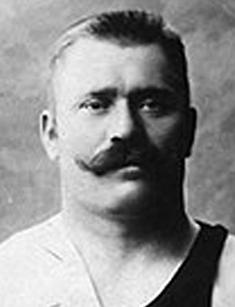

Имя: Иван Поддубный (Ivan Poddubny)
Дата рождения: 8 октября 1871 г.
Дата смерти: 8 августа 1949 г.
Возраст: 77 лет
Место рождения: с. Богодуховка, Полтавская губерния, Российская империя
Рост: 185
Вес: 120 кг
Знак зодиака: Весы
Деятельность: борец, артист цирка, популяризатор спорта
Теги: артист, борец, популяризатор
Семейное положение: был женат